Hoofdstuk 17Verloop van functies
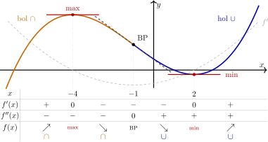
Leerplandoelstellingen (GO! Navigator)
Basisvorming (BV3_06)
-
• BV3_06.20 (MD 06.20) De leerlingen lossen vraagstukken en problemen op door te mathematiseren en demathematiseren en door gebruik te maken van heuristieken.
Gevorderde wiskunde (WD3_06.08)
-
• WD3_06.08.21 (MD 06.08.07) De leerlingen leggen het verband tussen de grafiek en het voorschrift van een functie en haar kenmerken.
-
– afbakening: veeltermfuncties, rationale functies, (elementaire) irrationale functies, exponentiële functies, logaritmische functies \(f(x)=\log _a(x)\), goniometrische functies \(f(x)=\cos x\) en \(f(x)=\tan x\), cyclometrische functies, absolute waardenfunctie, meervoudig functievoorschrift
-
– afbakening: domein, bereik, nulwaarden, tekenverloop, stijgen/dalen/constant, extrema, constante/toenemende/afnemende stijging/daling, symmetrie, periode, amplitude, asymptotisch gedrag, gedrag op oneindig
-
-
• WD3_06.08.29 (MD 06.08.18) De leerlingen analyseren het verloop van functies met behulp van de eerste en tweede afgeleide functie en lossen extremumproblemen op.
-
– afbakening: stelling van Rolle, middelwaardestelling van Lagrange
-
I Stellingen van Rolle en van Lagrange
1 Stelling van Rolle
\[ \text {Als}\quad \left . \begin {array}{l} 1.\ f \text { is continu in } [a,b] \\ 2.\ f \text { is afleidbaar in } ]a,b[ \\ 3.\ f(a)=f(b) \end {array} \right \} \quad \text {dan}\quad \exists \, c\in \,]a,b[\,:\ f'(c)=0 . \]
Er is dus minstens één \(c\) tussen \(a\) en \(b\) waar de afgeleide nul wordt.
2 Meetkundige betekenis
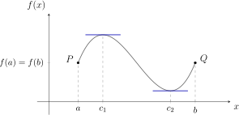
\begin{align*} f'(c_1)=f'(c_2)=0 &\Rightarrow \text {rico raaklijn aan de grafiek van } f = 0 \\ &\Rightarrow \text {raaklijn} \parallel x\text {-as} \end{align*}
Is aan de drie voorwaarden voldaan, dan vind je minstens één punt tussen \(P\) en \(Q\) waar de raaklijn evenwijdig is met de \(x\)-as.
3 Tegenvoorbeelden
Valt één voorwaarde weg, dan is er niet altijd zo’n punt.
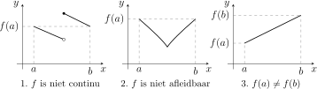
In geen van de drie grafieken ligt er een raaklijn evenwijdig met de \(x\)-as.
4 Stelling van Lagrange
Deze stelling heet ook de middelwaardestelling.
\[ \text {Als}\quad \left . \begin {array}{l} 1.\ f \text { is continu in } [a,b] \\ 2.\ f \text { is afleidbaar in } ]a,b[ \end {array} \right \} \quad \text {dan}\quad \exists \, c\in \,]a,b[\,:\ f(b)-f(a)=f'(c)\cdot (b-a) . \]
5 Meetkundige betekenis
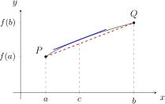
\begin{align*} f(b)-f(a) &= f'(c)\cdot (b-a) \\ \iff f'(c) &= \frac {f(b)-f(a)}{b-a} \\ \iff \text {rico raaklijn in } \bigl (c,f(c)\bigr ) &= \text {rico van de rechte } PQ \end{align*}
\(\Rightarrow \) Er bestaat minstens één punt tussen \(P\) en \(Q\) waar de raaklijn aan de grafiek van \(f\) evenwijdig is met \(PQ\). Er kunnen er ook meer zijn.
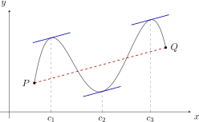
De stelling van Rolle is het bijzondere geval \(f(a)=f(b)\): dan is de rechte \(PQ\) evenwijdig met de \(x\)-as, en dus ook de raaklijn in \(c\).
6 VBTL Oefeningen
VBTL Analyse 2: p 200 nr 3, 4 en 5
II Stijgen en dalen van een functie
1 Teken van de eerste afgeleide
\[ f'(a)=\lim _{x\to a}\frac {f(x)-f(a)}{x-a} = \text {rico raaklijn in } P\bigl (a,f(a)\bigr ) \]
\(\seteqnumber{0}{}{0}\)\begin{align*} \text {Stel } f'(a)>0 &\Rightarrow f(x)-f(a) \text { en } x-a \text { hebben hetzelfde teken} \\ &\Rightarrow f \text { is stijgend!} \end{align*}
Dat geldt eerst enkel voor \(x\) dicht bij \(a\). Voor een heel interval steunt het besluit op Lagrange: voor \(x_1<x_2\) in \([a,b]\) is \(f(x_2)-f(x_1)=f'(c)\cdot (x_2-x_1)\), en dat is positief als \(f'(c)>0\).
Besluit
-
• Als \(f\) continu is in \([a,b]\) en \(f'(x)>0\) in \(]a,b[\), dan is \(f\) stijgend in \([a,b]\).
-
• Als \(f\) continu is in \([a,b]\) en \(f'(x)<0\) in \(]a,b[\), dan is \(f\) dalend in \([a,b]\).
2 Constante functie
Als een functie \(f\) continu is in \([a,b]\), dan geldt:
\[ f \text { is constant in } [a,b] \iff f'(x)=0,\ \forall x\in [a,b]. \]
3 Extremum van een functie
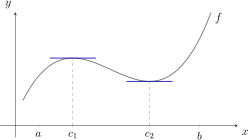
\[ \text {Een continue functie } f \text { bereikt een relatief } \left \{\begin {array}{l} \text {maximum in } c_1 \\ \text {minimum in } c_2 \end {array}\right . \]
\(\seteqnumber{0}{}{0}\)\begin{align*} &\iff f \text { gaat over van } \left \{\begin{array}{l} \text {stijgen naar dalen} \\ \text {dalen naar stijgen} \end {array}\right . \\ &\iff \text {het teken van } f' \text { gaat over van } \left \{\begin{array}{l} \text {strikt positief naar strikt negatief} \\ \text {strikt negatief naar strikt positief} \end {array}\right . \end{align*}
Gevolg
\[ \left .\begin {array}{r} f \text { bereikt een relatief extremum in } c \\ f \text { is afleidbaar in } c \end {array}\right \} \Rightarrow f'(c)=0 \]
Omgekeerd niet: \(f(x)=x^3\) heeft \(f'(0)=0\) maar geen extremum in \(0\) (zie de voorbeelden bij de tweede afgeleide).
4 Samenvatting
\(f\) is continu in \([a,b]\):
\(\seteqnumber{0}{}{0}\)\begin{align*} f'(x)=0 \text { in } ]a,b[ &\iff f \text { is constant in } [a,b] \\ f'(x)>0 \text { in } ]a,b[ &\Rightarrow f \text { is stijgend in } [a,b] \\ f'(x)<0 \text { in } ]a,b[ &\Rightarrow f \text { is dalend in } [a,b] \\ \left .\begin{array}{r} f'(x) \text { verandert van teken in } c \\ f \text { is continu in } c \end {array}\right \} &\Rightarrow f \text { bereikt een extremum in } c \end{align*} Is \(f\) bovendien afleidbaar in \(c\), dan is het een relatief extremum met \(f'(c)=0\).
5 Voorbeelden
a. \(f(x)=2x^2-5x+3\)
\(\seteqnumber{0}{}{0}\)\begin{align*} f'(x) &= 4x-5 \\ \text {nulwaarde } f' &: x=\frac {5}{4} \end{align*}
\[ \begin {array}{c|ccc} x & & \frac {5}{4} & \\ \hline f'(x) & - & 0 & + \\ \hline f(x) & \searrow & \tvmin {-\frac {1}{8}} & \nearrow \end {array} \]
Absoluut minimum \(f\bigl (\frac {5}{4}\bigr )=-\frac {1}{8}\); daar is de raaklijn evenwijdig met de \(x\)-as.
b. \(f(x)=\dfrac {1}{x^2}\)
\[ f'(x)=\frac {-2}{x^3} \qquad \begin {array}{r@{\,}c|ccc} & x & & 0 & \\ \hline T & -2 & - & - & - \\ N & x^3 & - & 0 & + \\ \hline & f'(x) & + & | & - \\ \hline & f(x) & \nearrow & \text {VA} & \searrow \end {array} \]
\(f\) gaat in \(0\) van stijgen naar dalen, maar \(0\notin \dom f\): geen extremum.
6 Oefeningen
De oefeningen hieronder komen uit VBTL Analyse 2.
VBTL oefening 1 (p 200)
Bepaal waar de functie stijgt en waar ze daalt. Geef ook de relatieve en de absolute extrema.
-
(b) \(f(x)=x^3-3x+1\)
relatief maximum \(f(-1)=3\), relatief minimum \(f(1)=-1\) \(f\) is continu in \(\R \).
\[ f'(x)=3x^2-3=3\,(x^2-1) \qquad \begin {array}{c|ccccc} x & & -1 & & 1 & \\ \hline f'(x) & + & 0 & - & 0 & + \\ \hline f(x) & \nearrow & \tvmax {3} & \searrow & \tvmin {-1} & \nearrow \end {array} \]
Relatief maximum \(f(-1)=3\), relatief minimum \(f(1)=-1\).
-
(d) \(f(x)=\dfrac {x^3}{x^2-9}\)
relatief maximum \(-\frac {9\sqrt {3}}{2}\) in \(-3\sqrt {3}\), relatief minimum \(\frac {9\sqrt {3}}{2}\) in \(3\sqrt {3}\) \(f\) is continu in \(\R \setminus \{-3,3\}\).
\[ f'(x)=\frac {3x^2\,(x^2-9)-x^3\cdot 2x}{(x^2-9)^2} =\frac {x^2\,(x^2-27)}{(x^2-9)^2} \]
\[ \begin {array}{r@{\,}c|ccccccccccc} & x & & -3\sqrt {3} & & -3 & & 0 & & 3 & & 3\sqrt {3} & \\ \hline \ldelim \{{2}{*}[T] & x^2 & + & + & + & + & + & 0 & + & + & + & + & + \\ & x^2-27 & + & 0 & - & - & - & - & - & - & - & 0 & + \\ \hline N & (x^2-9)^2 & + & + & + & 0 & + & + & + & 0 & + & + & + \\ \hline & f'(x) & + & 0 & - & | & - & 0 & - & | & - & 0 & + \\ \hline & f(x) & \nearrow & \tvmax {-\frac {9\sqrt {3}}{2}} & \searrow & \text {VA} & \searrow & 0 & \searrow & \text {VA} & \searrow & \tvmin {\frac {9\sqrt {3}}{2}} & \nearrow \end {array} \]
In \(0\) is \(f'(0)=0\), maar \(f'\) verandert er niet van teken: geen extremum.
-
(f) \(f(x)=\sqrt {x^3+3x^2}\)
relatief maximum \(f(-2)=2\), absoluut minimum \(f(-3)=f(0)=0\) Domein: \(x^3+3x^2=x^2\,(x+3)\geq 0\).
\[ \begin {array}{c|ccccc} x & & -3 & & 0 & \\ \hline x^2 & + & + & + & 0 & + \\ x+3 & - & 0 & + & + & + \\ \hline x^2\,(x+3) & - & 0 & + & 0 & + \end {array} \qquad \Rightarrow \qquad \dom f=[-3,+\infty [ \]
\[ f'(x)=\frac {3x^2+6x}{2\sqrt {x^3+3x^2}} =\frac {3x\,(x+2)}{2\sqrt {x^2}\cdot \sqrt {x+3}} \]
\[ \begin {array}{r@{\,}c|ccccccc} & x & & -3 & & -2 & & 0 & \\ \hline T & 3x^2+6x & \undefsign & + & + & 0 & - & 0 & + \\ \hline \ldelim \{{2}{*}[N] & \sqrt {x^2} & \undefsign & + & + & + & + & 0 & + \\ & \sqrt {x+3} & \undefsign & 0 & + & + & + & + & + \\ \hline & f'(x) & \undefsign & | & + & 0 & - & | & + \\ \hline & f(x) & \undefsign & \tvmin {0} & \nearrow & \tvmax {2} & \searrow & \tvmin {0} & \nearrow \end {array} \]
In \(0\) bestaat \(f'\) niet:
\(\seteqnumber{0}{}{0}\)\begin{align*} f'(0) &= \lim _{x\to 0}\frac {3x\,(x+2)}{2\sqrt {x^2}\cdot \sqrt {x+3}} \quad \vov {\frac {0}{0}} \\ &= \lim _{x\underset {>}{\to }0}\frac {3x\,(x+2)}{2x\sqrt {x+3}} = \frac {3\cdot 2}{2\sqrt {3}} = \sqrt {3} \\ &\text {of } \lim _{x\underset {<}{\to }0}\frac {3x\,(x+2)}{-2x\sqrt {x+3}} = -\sqrt {3} \\ &\Rightarrow \text {2 verschillende halve raaklijnen} \end{align*} \(f'(0)\) bestaat niet, maar \(f(0)\) wel, en \(\forall x\in \dom f: f(x)\geq f(0)\).
\(\Rightarrow \) \(f\) bereikt een absoluut minimum in \(x=0\), namelijk \(f(0)=0\). Ook \(f(-3)=0\) is een absoluut minimum; \(f(-2)=2\) is een relatief maximum.
VBTL oefening 7 (p 200)
Bepaal de reële getallen \(a\) en \(b\) zodat \(f(x)=ax^3+bx^2\) voor \(x=4\) de extreme waarde \(-\frac {32}{3}\) bereikt.
\(a=\frac {1}{3}\) en \(b=-2\) \(f\) is een veeltermfunctie, dus \(f'\) ook. Verandert \(f'\) van teken in \(x=4\), dan is \(f'(4)=0\).
\(\seteqnumber{0}{}{0}\)\begin{align*} &\Rightarrow f'(4)=0 \text { en } f(4)=-\frac {32}{3} \\ &\Rightarrow \left \{\begin{array}{l} 3a\cdot 4^2+2b\cdot 4=0 \\ a\cdot 4^3+b\cdot 4^2=-\frac {32}{3} \end {array}\right . \iff \left \{\begin{array}{l} 6a+b=0 \\ 4a+b=-\frac {2}{3} \end {array}\right . \iff \left \{\begin{array}{l} 2a=\frac {2}{3} \\ b=-6a \end {array}\right . \iff \left \{\begin{array}{l} a=\frac {1}{3} \\ b=-2 \end {array}\right . \end{align*}
VBTL oefening 8 (p 200)
Bepaal een veeltermfunctie van de derde graad die \(0\) als nulwaarde heeft, in \(x=5\) een relatief extremum met waarde \(0\) bereikt, en in \(x=3\) een raaklijn met richtingscoëfficiënt \(-4\) heeft.
\(f(x)=\frac {1}{2}x^3-5x^2+\frac {25}{2}x\)
\[ \left \{\begin {array}{l} f(0)=0 \\ f(5)=0 \\ f'(5)=0 \\ f'(3)=-4 \end {array}\right . \quad \text {met } f(x)=ax^3+bx^2+cx+d \quad \Rightarrow \quad f'(x)=3ax^2+2bx+c \]
\(\seteqnumber{0}{}{0}\)\begin{align*} &\iff \left \{\begin{array}{l} d=0 \\ 125a+25b+5c=0 \\ 75a+10b+c=0 \\ 27a+6b+c=-4 \end {array}\right . \iff \left \{\begin{array}{l} d=0 \\ 25a+5b+c=0 \\ 75a+10b+c=0 \\ 27a+6b+c=-4 \end {array}\right . \\ &\iff \left \{\begin{array}{l} d=0 \\ 25a+5b+c=0 \\ 50a+5b=0 \\ 2a+b=-4 \end {array}\right . \iff \left \{\begin{array}{l} d=0 \\ c=-25a-5b \\ b=-10a \\ -8a=-4 \end {array}\right . \iff \left \{\begin{array}{l} d=0 \\ c=\frac {25}{2} \\ b=-5 \\ a=\frac {1}{2} \end {array}\right . \\ &\Rightarrow f(x)=\frac {x^3}{2}-5x^2+\frac {25}{2}x \end{align*}
7 VBTL Oefeningen
VBTL Analyse 3: p 41 nr 8 en 10; p 42 nr 13, 15, 16, 19 en 20
III Extremumvraagstukken
1 Voorbeeld 1: som en product
De som van twee positieve getallen is \(12\). Voor welke getallen is het product van het kwadraat van het ene met het andere maximaal?
Denk vooraf na: welke twee getallen zou jij kiezen?
\(\seteqnumber{0}{}{0}\)\begin{align*} \text {Keuze onbekenden:}\quad & x=\text {getal dat gekwadrateerd wordt}, \quad y=\text {het andere getal} \\ \text {Opstellen functie:}\quad & x+y=12 \Rightarrow y=12-x \\ & P(x)=x^2\cdot y=x^2\,(12-x)=12x^2-x^3 \\ & x>0 \text { en } y=12-x>0 \Rightarrow \dom P=\,]0,12[ \\ \text {Eerste afgeleide:}\quad & P'(x)=24x-3x^2=3x\,(8-x) \qquad \text {nulwaarden: } x=0\ \lightning \text { en } x=8 \end{align*} \(x=0\) valt buiten \(]0,12[\): beide getallen moeten positief zijn.
\[ \begin {array}{r@{\,}c|ccccc} & x & 0 & & 8 & & 12 \\ \hline & 3x & & + & + & + & \\ & 8-x & & + & 0 & - & \\ \hline & P'(x) & & + & 0 & - & \\ \hline & P(x) & & \nearrow & \tvmax {256} & \searrow & \end {array} \]
Het product is maximaal voor \(x=8\) en \(y=12-8=4\): \(P_{\max }=8^2\cdot 4=256\).
Wie \(6\) en \(6\) gokt, vindt \(6^2\cdot 6=216<256\). De symmetrische keuze ligt voor de hand, maar het kwadraat maakt de twee getallen ongelijk belangrijk. Hier moet de afgeleide beslissen, niet het gevoel.
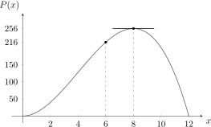
2 Voorbeeld 2: op ieder potje past een dekseltje
Een fabrikant maakt cilindervormige potjes met een inhoud van \(300\text { cm}^3\). Bodem en mantel zijn uit materiaal van \(0.002\) euro per \(\text {cm}^2\). Op elk potje past een dekseltje: een schijf met een opstaande rand van \(0.5\text { cm}\) hoog, uit materiaal van \(0.003\) euro per \(\text {cm}^2\). Welke afmetingen geven de goedkoopste verpakking?
\(\seteqnumber{0}{}{0}\)\begin{align*} \text {Keuze onbekenden:}\quad & r=\text {straal grondvlak},\quad h=\text {hoogte potje (in cm)} \\ \text {Gegeven:}\quad & I=300=\pi r^2\cdot h \Rightarrow h=\frac {300}{\pi r^2} \end{align*}
\(\seteqnumber{0}{}{0}\)\begin{align*} \text {Kostenfunctie:}\quad k(r) &= \Bigl (\underbrace {2\pi r\cdot \frac {300}{\pi r^2}}_{\text {mantel}} +\underbrace {\pi r^2}_{\text {bodem}}\Bigr )\cdot 0.002 +\Bigl (\underbrace {2\pi r\cdot 0.5}_{\text {rand}} +\underbrace {\pi r^2}_{\text {schijf}}\Bigr )\cdot 0.003 \\ &= \frac {1.2}{r}+0.002\pi r^2+0.003\pi r+0.003\pi r^2 \\ &= 0.005\pi r^2+0.003\pi r+\frac {1.2}{r} \end{align*}
\(\seteqnumber{0}{}{0}\)\begin{align*} \text {Eerste afgeleide:}\quad k'(r) &= 0.01\pi r+0.003\pi -\frac {1.2}{r^2} = \frac {10\pi r^3+3\pi r^2-1200}{1000\,r^2} \\ \text {nulwaarde } T &: r\approx 3.27 \text { (grafisch, met het GRM)} \\ \text {nulwaarde } N &: r=0 \end{align*}
\[ \begin {array}{r@{\,}c|ccccc} & r & & 0 & & 3.27 & \\ \hline T & 10\pi r^3+3\pi r^2-1200 & \undefsign & - & - & 0 & + \\ N & 1000\,r^2 & \undefsign & 0 & + & + & + \\ \hline & k'(r) & \undefsign & | & - & 0 & + \\ \hline & k(r) & \undefsign & | & \searrow & \tvmin {0.57} & \nearrow \end {array} \]
De minimale kost is \(0.57\) euro per potje, voor \(r\approx 3.27\text { cm}\) en \(h=\dfrac {300}{\pi \cdot 3.27^2}\approx 8.93\text { cm}\).
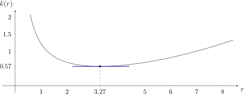
3 Voorbeeld 3: maximale oppervlakte langs een muur
Je hebt \(60\text { m}\) omheining om een rechthoekige tuin af te bakenen. Eén zijde grenst aan een lange muur en heeft geen omheining nodig. Welke afmetingen geven de grootste oppervlakte?
\begin{align*} \text {Keuze onbekenden:}\quad & x=\text {diepte (loodrecht op de muur)}, \quad y=\text {breedte (langs de muur)} \\ \text {Opstellen functie:}\quad & 2x+y=60 \Rightarrow y=60-2x \\ & A(x)=x\cdot y=x\,(60-2x)=60x-2x^2 \\ & x>0 \text { en } y=60-2x>0 \Rightarrow \dom A=\,]0,30[ \\ \text {Eerste afgeleide:}\quad & A'(x)=60-4x \qquad \text {nulwaarde: } x=15 \end{align*}
\[ \begin {array}{c|ccccc} x & 0 & & 15 & & 30 \\ \hline A'(x) & & + & 0 & - & \\ \hline A(x) & & \nearrow & \tvmax {450} & \searrow & \end {array} \qquad \lim _{x\underset {>}{\to }0}A(x)=0,\quad \lim _{x\underset {<}{\to }30}A(x)=0 \]
De oppervlakte is maximaal voor \(x=15\text { m}\) en \(y=60-2\cdot 15=30\text { m}\): \(A_{\max }=15\cdot 30=450\text { m}^2\).
De beste tuin is een half vierkant: \(y=2x\). Spiegel je ze in de muur, dan krijg je een vierkant.
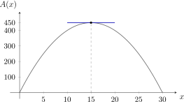
4 Voorbeeld 4: maximale inhoud van een open doos
Uit een vierkant karton van \(30\text { cm}\) op \(30\text { cm}\) knip je in elke hoek een vierkantje met zijde \(x\) weg, en je plooit de randen op tot een open doos. Welke \(x\) geeft de grootste inhoud?
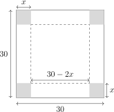
\begin{align*} \text {Keuze onbekenden:}\quad & x=\text {zijde van een weggeknipt vierkantje = hoogte van de doos} \\ \text {Opstellen functie:}\quad & V(x)=(30-2x)^2\cdot x =(900-120x+4x^2)\,x=4x^3-120x^2+900x \\ & x>0 \text { en } 30-2x>0 \Rightarrow \dom V=\,]0,15[ \\ \text {Eerste afgeleide:}\quad & V'(x)=12x^2-240x+900=12\,(x^2-20x+75) \end{align*}
\(\seteqnumber{0}{}{0}\)\begin{align*} x^2-20x+75=0 &\iff x=\frac {20\pm \sqrt {400-300}}{2}=\frac {20\pm 10}{2} \\ &\iff x=5 \text { of } x=15\ \lightning \end{align*} \(x=15\) valt buiten \(]0,15[\): de doos zou geen bodem meer hebben.
\[ \begin {array}{c|ccccc} x & 0 & & 5 & & 15 \\ \hline V'(x) & & + & 0 & - & \\ \hline V(x) & & \nearrow & \tvmax {2000} & \searrow & \end {array} \]
De inhoud is maximaal voor \(x=5\text { cm}\): \(V_{\max }=5\cdot 20^2=2000\text { cm}^3=2\text { liter}\).
5 Stappenplan
-
1. Lees en schets. Kies de onbekenden en zet de gegevens in een schets.
-
2. Opstellen functie. Zet de voorwaarden (een vaste omtrek, een vaste inhoud, …) om in vergelijkingen en druk de grootheid uit in één onbekende. Bepaal het domein.
-
3. Eerste afgeleide. Bereken \(f'(x)\) en de nulwaarden van teller en noemer in het domein.
-
4. Tekenverloop. Lees uit het tekenverloop van \(f'\) af waar het maximum of het minimum ligt, en kijk naar de randen van het domein.
-
5. Besluit. Geef alle gevraagde grootheden, met hun eenheid, in een volledige zin.
6 Oefeningen
De oefeningen hieronder komen uit VBTL Analyse 2.
VBTL oefening 23 (p 204)
Een bedrijf bouwt een isolatiezaaltje met een vierkant grondvlak en een inhoud van \(1200\text { m}^3\). Vloertegels kosten \(30\) euro per \(\text {m}^2\), plafondtegels \(20\) euro per \(\text {m}^2\) en wandtegels \(27.5\) euro per \(\text {m}^2\). Bereken de hoogte en de lengte waarvoor de kostprijs minimaal is. Hoe groot is die kostprijs?
\(l\approx 10.97\text { m}\), \(h\approx 9.97\text { m}\), kostprijs \(\approx 18\,049.86\) euro
\(\seteqnumber{0}{}{0}\)\begin{align*} \text {Keuze onbekenden:}\quad & h=\text {hoogte},\quad l=\text {lengte} \\ & \Rightarrow \text {opp.\ vloer}=l^2,\quad \text {opp.\ plafond}=l^2, \quad \text {opp.\ wanden}=4\cdot l\cdot h \\ \text {Gegeven:}\quad & I=1200=l^2\cdot h \Rightarrow h=\frac {1200}{l^2} \end{align*}
\(\seteqnumber{0}{}{0}\)\begin{align*} \Rightarrow K(l) &= 30\cdot l^2+20\cdot l^2+27.5\cdot 4\cdot l\cdot h \\ &= 50\,l^2+110\cdot l\cdot \frac {1200}{l^2} = 50\,l^2+\frac {132\,000}{l} \\ \Rightarrow K'(l) &= 100\,l-\frac {132\,000}{l^2} = \frac {100\,l^3-132\,000}{l^2} \end{align*} Nulwaarde \(T\): \(l^3=1320 \Rightarrow l=\sqrt [3]{1320}\approx 10.97\); nulwaarde \(N\): \(l=0\).
\[ \begin {array}{r@{\,}c|ccccc} & l & & 0 & & 10.97 & \\ \hline T & 100\,l^3-132\,000 & \undefsign & - & - & 0 & + \\ N & l^2 & \undefsign & 0 & + & + & + \\ \hline & K'(l) & \undefsign & | & - & 0 & + \\ \hline & K(l) & \undefsign & | & \searrow & \text {min} & \nearrow \end {array} \]
De kosten zijn minimaal (ongeveer \(18\,049.86\) euro) als \(l\approx 10.97\text { m}\) en \(h=\dfrac {1200}{l^2}\approx 9.97\text { m}\).
VBTL oefening 25 (p 204)
Uit een metalen plaat van \(30\text { cm}\) op \(50\text { cm}\) snijden we in elke hoek een even groot vierkantje weg. Daarna plooien we de plaat tot een open bakje.
-
(a) Bereken de lengte, de breedte en de inhoud van het bakje als de hoogte \(4\text { cm}\) is.
\(l=42\text { cm}\), \(b=22\text { cm}\), \(I=3696\text { cm}^3\)
\(\seteqnumber{0}{}{0}\)\begin{align*} h=4 &\Rightarrow l=50-2\cdot 4=42\text { cm} \text { en } b=30-2\cdot 4=22\text { cm} \\ &\Rightarrow I=4\cdot 42\cdot 22=3696\text { cm}^3 \end{align*}
-
(b) Druk de lengte, de breedte en de inhoud uit in functie van de hoogte \(h\). Tussen welke waarden ligt \(h\)?
\(I(h)=(50-2h)(30-2h)\,h\) met \(0<h<15\)
\[ l=50-2h,\qquad b=30-2h,\qquad I(h)=(50-2h)(30-2h)\cdot h, \qquad 0<h<15 \]
-
(c) Voor welke afmetingen is de inhoud maximaal? Hoe groot is die?
\(h\approx 6.07\text { cm}\), \(l\approx 37.86\text { cm}\), \(b\approx 17.86\text { cm}\), \(I_{\max }\approx 4104.41\text { cm}^3\)
\(\seteqnumber{0}{}{0}\)\begin{align*} I(h) &= l\cdot b\cdot h=(50-2h)(30-2h)\cdot h = 1500h-160h^2+4h^3 \\ I'(h) &= 1500-320h+12h^2 \end{align*}
\(\seteqnumber{0}{}{0}\)\begin{align*} \text {nulwaarden: } h &= \frac {320\pm 40\sqrt {19}}{24} = \frac {40\pm 5\sqrt {19}}{3} \\ &\Rightarrow h\approx 20.60\geq 15\ \lightning \quad \text {of}\quad h\approx 6.07 \end{align*} \(h\approx 20.60\) valt buiten het domein \(]0,15[\).
\[ \begin {array}{c|ccccc} h & 0 & & 6.07 & & 15 \\ \hline I'(h) & & + & 0 & - & \\ \hline I(h) & & \nearrow & \text {max} & \searrow & \end {array} \]
De maximale inhoud is \(4104.41\text { cm}^3\). De lengte is dan \(37.86\text { cm}\), de hoogte \(6.07\text { cm}\) en de breedte \(17.86\text { cm}\).
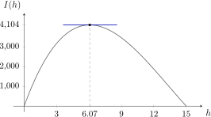
7 VBTL Oefeningen
VBTL Analyse 3: p 46 nr 32 (a tot d) en 33 (a tot c en e); p 47 nr 34 en 35; p 48 nr 37
VBTL Analyse 2: p 204 nr 22 en 24; p 205 nr 26 en 27; p 206 nr 29 en 30; p 207 nr 32 tot 35; p 208 nr 36 tot 40; p 209 nr 42, 43 en 45; p 210 nr 47 en 50 tot 52
IV Betekenis van de tweede afgeleide
1 Grafisch voorbeeld
Bekijk de grafiek van \(f(x)=\frac {1}{9}x^3-x+2\) in \([-3,3]\).
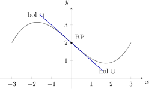
\[ f' \text { geeft de verandering weer van } f \quad \Rightarrow \quad f'' \text { geeft de verandering weer van } f' \]
In \([-3,0]\):
\(\seteqnumber{0}{}{0}\)\begin{align*} \text {rico raaklijn neemt af} &\Rightarrow f'(x) \text { is dalend} \\ &\Rightarrow f''(x)<0 \\ &\Rightarrow f \text { is bol of concaaf (holle zijde naar onder, } \cap ) \end{align*} In \([0,3]\):
\(\seteqnumber{0}{}{0}\)\begin{align*} \text {rico raaklijn neemt toe} &\Rightarrow f'(x) \text { is stijgend} \\ &\Rightarrow f''(x)>0 \\ &\Rightarrow f \text { is hol of convex (holle zijde naar boven, } \cup ) \end{align*} In het punt \((0,2)\) gaat \(f''\) over van negatief naar positief:
\(\seteqnumber{0}{}{0}\)\begin{align*} &\Rightarrow f' \text { bereikt een extremum in } x=0 \\ &\Rightarrow f \text { gaat over van bol naar hol} \end{align*}
Een punt van de grafiek waar de kromme overgaat van bol naar hol (of omgekeerd), noemen we een buigpunt. De raaklijn in dat punt noemen we een buigraaklijn.
Merk op: een buigraaklijn gaat dwars door de grafiek.
2 Stelling
\(\seteqnumber{0}{}{0}\)\begin{align*} f \text { is convex of hol in } [a,b] &\Leftarrow \left \{\begin{array}{l} f \text { is continu in } [a,b] \\ f''(x)>0 \text { in } ]a,b[ \end {array}\right . \\ f \text { is concaaf of bol in } [a,b] &\Leftarrow \left \{\begin{array}{l} f \text { is continu in } [a,b] \\ f''(x)<0 \text { in } ]a,b[ \end {array}\right . \\ f \text { heeft een buigpunt in } a &\Leftarrow \left \{\begin{array}{l} f \text { is continu in } a \\ f'' \text { verandert van teken in } a \\ \text {er is een raaklijn in } \bigl (a,f(a)\bigr ) \end {array}\right . \end{align*}
3 Voorbeelden
a. \(f(x)=\dfrac {2}{x-2}\)
\(\dom f=\R \setminus \{2\}\).
\[ f'(x)=\frac {-2}{(x-2)^2} \qquad f''(x)=\frac {4}{(x-2)^3} \]
\[ \begin {array}{r@{\,}c|ccc} & x & & 2 & \\ \hline T & -2 & - & - & - \\ N & (x-2)^2 & + & 0 & + \\ \hline & f'(x) & - & | & - \\ \hline & f(x) & \searrow & \text {VA} & \searrow \end {array} \qquad \begin {array}{r@{\,}c|ccc} & x & & 2 & \\ \hline T & 4 & + & + & + \\ N & (x-2)^3 & - & 0 & + \\ \hline & f''(x) & - & | & + \\ \hline & f(x) & \cap & \text {VA} & \cup \end {array} \]
Bol links van \(2\), hol rechts van \(2\). \(f''\) verandert van teken in \(2\), maar \(f\) is daar niet continu: geen buigpunt.
b. \(f(x)=x^3\)
\[ f'(x)=3x^2 \qquad \begin {array}{c|ccc} x & & 0 & \\ \hline f'(x) & + & 0 & + \\ \hline f(x) & \nearrow & 0 & \nearrow \end {array} \qquad \qquad f''(x)=6x \qquad \begin {array}{c|ccc} x & & 0 & \\ \hline f''(x) & - & 0 & + \\ \hline f(x) & \cap & \text {BP} & \cup \end {array} \]
In \((0,0)\) is de raaklijn horizontaal, maar er is geen extremum. Het is een buigpunt: \(f\) is continu, de raaklijn bestaat en \(f''\) verandert van teken.
4 Oefeningen
De oefeningen hieronder komen uit VBTL Analyse 2.
VBTL oefening 6 (p 200)
Bepaal waar de grafiek hol en waar ze bol is. Bereken de coördinaten van de buigpunten en een vergelijking van de buigraaklijn.
-
(d) \(f(x)=\dfrac {x^3}{x^2-1}\)
bol in \(]-\infty ,-1[\) en \(]0,1[\), hol in \(]-1,0[\) en \(]1,+\infty [\); BP \((0,0)\) met \(t\leftrightarrow y=0\) \(\dom f=\R \setminus \{-1,1\}\).
\(\seteqnumber{0}{}{0}\)\begin{align*} f'(x) &= \frac {3x^2\,(x^2-1)-x^3\cdot 2x}{(x^2-1)^2} = \frac {x^2\,(x^2-3)}{(x^2-1)^2} \\ f''(x) &= \frac {(4x^3-6x)(x^2-1)^2-x^2\,(x^2-3)\cdot 2\,(x^2-1)\cdot 2x} {(x^2-1)^4} \\ &= \frac {4x^5-4x^3-6x^3+6x-4x^5+12x^3}{(x^2-1)^3} = \frac {2x\,(x^2+3)}{(x^2-1)^3} \end{align*} Nulwaarden \(N\): \(x=1\) en \(x=-1\); nulwaarde \(T\): \(x=0\).
\[ \begin {array}{r@{\,}c|ccccccc} & x & & -1 & & 0 & & 1 & \\ \hline T & 2x\,(x^2+3) & - & - & - & 0 & + & + & + \\ N & (x^2-1)^3 & + & 0 & - & - & - & 0 & + \\ \hline & f''(x) & - & | & + & 0 & - & | & + \\ \hline & f(x) & \cap & \text {VA} & \cup & \text {BP} & \cap & \text {VA} & \cup \end {array} \]
\(\text {BP}=(0,0)\). De buigraaklijn \(t\):
\(\seteqnumber{0}{}{0}\)\begin{align*} m_t &= f'(0)=0, \text { door BP}(0,0) \\ \Rightarrow t &\leftrightarrow y-0=0\cdot (x-0) \\ &\iff y=0 \end{align*}
VBTL oefening 9 (p 201)
Bepaal een veeltermfunctie van de derde graad waarvan de grafiek \(P(2,4)\) als buigpunt heeft, met \(-3\) als richtingscoëfficiënt van de buigraaklijn, en die voor \(x=4\) een relatief extremum bereikt.
\(f(x)=\frac {1}{4}x^3-\frac {3}{2}x^2+8\) Met \(f(x)=ax^3+bx^2+cx+d\) is \(f'(x)=3ax^2+2bx+c\) en \(f''(x)=6ax+2b\).
\(\seteqnumber{0}{}{0}\)\begin{align*} \left \{\begin{array}{l} f'(4)=0 \\ f(2)=4 \\ f''(2)=0 \\ f'(2)=-3 \end {array}\right . &\iff \left \{\begin{array}{l} 48a+8b+c=0 \\ 8a+4b+2c+d=4 \\ 12a+2b=0 \\ 12a+4b+c=-3 \end {array}\right . \iff \left \{\begin{array}{l} 48a-48a-3+12a=0 \\ d=4-8a-4b-2c \\ b=-6a \\ c=-3+12a \end {array}\right . \\ &\iff \left \{\begin{array}{l} a=\frac {1}{4} \\ b=-\frac {3}{2} \\ c=0 \\ d=8 \end {array}\right . \quad \Rightarrow \quad f(x)=\frac {x^3}{4}-\frac {3x^2}{2}+8 \end{align*}
5 VBTL Oefeningen
VBTL Analyse 3: p 39 nr 4 (b); p 41 nr 9 en 11; p 42 nr 12, 14, 17 en 18; p 43 nr 21 en 22; p 44 nr 23; p 46 nr 32 (e) en 33 (d)
V Verloop van reële functies
1 Algemene werkwijze
-
1. Domein
-
2. Continuı̈teit
-
3. Symmetrie: even als \(f(-x)=f(x)\), oneven als \(f(-x)=-f(x)\) (periodiek met periode \(p\) als \(f(x+k\cdot p)=f(x)\), \(k\in \Z \))
-
4. Snijpunten met de assen
-
5. Tekenverloop met nulwaarden en polen
-
6. Asymptoten en ligging: VA, HA en SA
-
7. \(f'(x)\): stijgen en dalen, extrema
-
8. \(f''(x)\): hol en bol, buigpunten
-
9. Enkele punten (tabel op het GRM) en overzichtstabel
-
10. Grafiek
Periodiek komt verder aan bod bij de goniometrische functies: \(\sin (x+2\pi )=\sin x\), dus \(p=2\pi \).
2 Veeltermfuncties: een parabool
Oefening 1
Onderzoek het verloop van \(f(x)=\dfrac {1}{4}x^2-\dfrac {1}{2}x-\dfrac {3}{4}\).
-
1. Domein: \(\dom f=\R \)
-
2. Continuı̈teit: continu in \(\R \) (een veeltermfunctie is continu in haar domein)
-
3. Symmetrie: geen
-
4. Snijpunten met de assen
\((0,-\frac {3}{4})\), \((-1,0)\) en \((3,0)\)
\(\seteqnumber{0}{}{0}\)\begin{align*} x=0 &\Rightarrow y=-\frac {3}{4} \Rightarrow \text {snijpunt met de } y\text {-as: } \Bigl (0,-\frac {3}{4}\Bigr ) \\ \frac {1}{4}x^2-\frac {1}{2}x-\frac {3}{4}=0 &\iff x^2-2x-3=0 \iff x=-1 \text { of } x=3 \\ &\Rightarrow \text {snijpunten met de } x\text {-as: } (-1,0) \text { en } (3,0) \end{align*}
-
5. Tekenverloop
\[ \begin {array}{c|ccccc} x & & -1 & & 3 & \\ \hline f(x) & + & 0 & - & 0 & + \end {array} \]
-
6. Asymptoten
geen asymptoten
\(\seteqnumber{0}{}{0}\)\begin{align*} \text {VA:}\quad & \text {geen} \\ \text {HA:}\quad & \lim _{x\to \pm \infty }f(x) =\lim _{x\to \pm \infty }\frac {1}{4}x^2=+\infty \notin \R \Rightarrow \text {geen} \\ \text {SA:}\quad & \lim _{x\to \pm \infty }\frac {f(x)}{x} =\lim _{x\to \pm \infty }\frac {\frac {1}{4}x^2}{x} =\lim _{x\to \pm \infty }\frac {1}{4}x=\pm \infty \notin \R _0 \Rightarrow \text {geen} \end{align*}
-
7. Eerste afgeleide
minimum \(f(1)=-1\)
\[ f'(x)=\frac {1}{2}x-\frac {1}{2} \qquad \text {nulwaarde: } x=1 \qquad \begin {array}{c|ccc} x & & 1 & \\ \hline f'(x) & - & 0 & + \\ \hline f(x) & \searrow & \tvmin {-1} & \nearrow \end {array} \]
Minimum \(f(1)=-1\) voor \(x=1\), met een horizontale raaklijn (HR).
-
8. Tweede afgeleide
overal hol
\[ f''(x)=\frac {1}{2} \qquad \begin {array}{c|c} x & \\ \hline f''(x) & + \\ \hline f(x) & \cup \end {array} \]
-
9. Enkele punten en overzichtstabel
\[ \begin {array}{c|ccccccccc} x & -3 & -2 & -1 & 0 & 1 & 2 & 3 & 4 & 5 \\ \hline f(x) & 3 & \frac {5}{4} & 0 & -\frac {3}{4} & -1 & -\frac {3}{4} & 0 & \frac {5}{4} & 3 \end {array} \]
\[ \begin {array}{c|ccccc} x & -\infty & & 1 & & +\infty \\ \hline f'(x) & & - & 0 & + & \\ \hline f''(x) & & + & + & + & \\ \hline f(x) & +\infty & \searrow & \tvmin {-1} & \nearrow & +\infty \\ & & \cup & \text {HR} & \cup & \end {array} \]
-
10. Grafiek
Met de gegevens uit 1 tot 9 tekenen we de grafiek hieronder: een parabool.
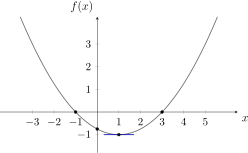
3 Veeltermfuncties: een derdegraadsfunctie
Oefening 2
Onderzoek het verloop van \(f(x)=\dfrac {1}{36}\,(x^3+3x^2-24x+20)\).
-
1. Domein: \(\dom f=\R \)
-
2. Continuı̈teit: continu in \(\R \)
-
3. Symmetrie: geen
-
4. Snijpunten met de assen
\(P_1(-2-2\sqrt {6},0)\), \(P_2(1,0)\), \(P_3(-2+2\sqrt {6},0)\) en \((0,\frac {5}{9})\) Met de regel van Horner delen we door \(x-1\):
\[ \begin {array}{c|cccc} & 1 & 3 & -24 & 20 \\ 1 & & 1 & 4 & -20 \\ \hline & 1 & 4 & -20 & \fbox {$0$} \end {array} \qquad \Rightarrow \qquad f(x)=\frac {1}{36}\,(x-1)(x^2+4x-20) \]
\[ x^2+4x-20=0 \iff x=\frac {-4\pm \sqrt {96}}{2}=-2\pm 2\sqrt {6} \]
Met de \(x\)-as: \(P_1(-2-2\sqrt {6},0)\), \(P_2(1,0)\) en \(P_3(-2+2\sqrt {6},0)\). Met de \(y\)-as: \(\bigl (0,\frac {5}{9}\bigr )\).
-
5. Tekenverloop
Met \(x_1=-2-2\sqrt {6}\approx -6.90\) en \(x_3=-2+2\sqrt {6}\approx 2.90\):
\[ \begin {array}{c|ccccccc} x & & x_1 & & 1 & & x_3 & \\ \hline x-1 & - & - & - & 0 & + & + & + \\ \frac {1}{36}(x^2+4x-20) & + & 0 & - & - & - & 0 & + \\ \hline f(x) & - & 0 & + & 0 & - & 0 & + \end {array} \]
-
6. Asymptoten
geen asymptoten
\(\seteqnumber{0}{}{0}\)\begin{align*} \text {VA:}\quad & \text {geen} \\ \text {HA:}\quad & \lim _{x\to +\infty }f(x)=+\infty \notin \R \text { en } \lim _{x\to -\infty }f(x)=-\infty \notin \R \Rightarrow \text {geen} \\ \text {SA:}\quad & \lim _{x\to \pm \infty }\frac {f(x)}{x} =\lim _{x\to \pm \infty }\frac {1}{36}\,x^2=+\infty \notin \R _0 \Rightarrow \text {geen} \end{align*}
-
7. Eerste afgeleide
relatief maximum \(\frac {25}{9}\) voor \(x=-4\), relatief minimum \(-\frac {2}{9}\) voor \(x=2\)
\[ f'(x)=\frac {1}{36}\,(3x^2+6x-24)=\frac {1}{12}\,(x^2+2x-8) \qquad \text {nulwaarden: } x=-4 \text { en } x=2 \]
\[ \begin {array}{c|ccccc} x & & -4 & & 2 & \\ \hline f'(x) & + & 0 & - & 0 & + \\ \hline f(x) & \nearrow & \tvmax {\frac {25}{9}} & \searrow & \tvmin {-\frac {2}{9}} & \nearrow \end {array} \]
Relatief maximum \(\frac {25}{9}\) voor \(x=-4\) en relatief minimum \(-\frac {2}{9}\) voor \(x=2\), telkens met een horizontale raaklijn.
-
8. Tweede afgeleide
BP \(\bigl (-1,\frac {23}{18}\bigr )\) met rico buigraaklijn \(-\frac {3}{4}\)
\[ f''(x)=\frac {1}{12}\,(2x+2)=\frac {1}{6}\,(x+1) \qquad \text {nulwaarde: } x=-1 \qquad \begin {array}{c|ccc} x & & -1 & \\ \hline f''(x) & - & 0 & + \\ \hline f(x) & \cap & \text {BP} & \cup \end {array} \]
\(\text {BP}=\bigl (-1,\frac {23}{18}\bigr )\) met rico buigraaklijn \(f'(-1)=-\frac {9}{12}=-\frac {3}{4}\):
\[ t\leftrightarrow y-\frac {23}{18}=-\frac {3}{4}\,(x+1) \iff 27x+36y-19=0 \]
-
9. Enkele punten en overzichtstabel
\[ \begin {array}{c|cccccccccccccc} x & -7 & -6 & -5 & -4 & -3 & -2 & -1 & 0 & 1 & 2 & 3 & 4 & 5 & 6 \\ \hline f(x) & -\frac {2}{9} & \frac {14}{9} & \frac {5}{2} & \frac {25}{9} & \frac {23}{9} & 2 & \frac {23}{18} & \frac {5}{9} & 0 & -\frac {2}{9} & \frac {1}{18} & 1 & \frac {25}{9} & \frac {50}{9} \end {array} \]
\[ \begin {array}{c|ccccccccc} x & -\infty & & -4 & & -1 & & 2 & & +\infty \\ \hline f'(x) & & + & 0 & - & - & - & 0 & + & \\ \hline f''(x) & & - & - & - & 0 & + & + & + & \\ \hline f(x) & -\infty & \nearrow & \tvmax {\frac {25}{9}} & \searrow & \tvbp {\frac {23}{18}} & \searrow & \tvmin {-\frac {2}{9}} & \nearrow & +\infty \\ & & \cap & \text {HR} & \cap & & \cup & \text {HR} & \cup & \end {array} \]
-
10. Grafiek
Met de gegevens uit 1 tot 9 tekenen we de grafiek hieronder.
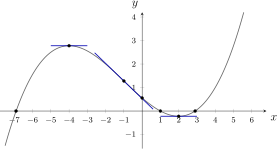
4 Rationale functies
Oefening 3
Onderzoek het verloop van \(f(x)=\dfrac {2x}{x^2-1}\).
-
1. Domein
\(\dom f=\R \setminus \{-1,1\}\) Nulwaarden \(N\): \(x^2-1=0\iff x=1\) of \(x=-1\), dus \(\dom f=\R \setminus \{-1,1\}\).
-
2. Continuı̈teit: continu in \(\R \setminus \{-1,1\}\)
-
3. Symmetrie
oneven \(f(-x)=\dfrac {-2x}{x^2-1}=-f(x)\): \(f\) is oneven, de grafiek is symmetrisch ten opzichte van de oorsprong.
-
4. Snijpunten met de assen: enkel \((0,0)\)
-
5. Tekenverloop
Nulwaarde \(T\): \(x=0\); nulwaarden \(N\): \(x=1\) en \(x=-1\).
\[ \begin {array}{r@{\,}c|ccccccc} & x & & -1 & & 0 & & 1 & \\ \hline T & 2x & - & - & - & 0 & + & + & + \\ N & x^2-1 & + & 0 & - & - & - & 0 & + \\ \hline & f(x) & \underset {\text {onder HA}}{-} & | & \underset {\text {boven HA}}{+} & 0 & \underset {\text {onder HA}}{-} & | & \underset {\text {boven HA}}{+} \end {array} \]
-
6. Asymptoten en ligging
VA \(x=-1\) en \(x=1\), HA \(y=0\)
\(\seteqnumber{0}{}{0}\)\begin{align*} \text {VA:}\quad & \lim _{x\underset {<}{\to }1}f(x)=-\infty ,\quad \lim _{x\underset {>}{\to }1}f(x)=+\infty \Rightarrow x=1 \text { is VA} \\ & \lim _{x\underset {<}{\to }-1}f(x)=-\infty ,\quad \lim _{x\underset {>}{\to }-1}f(x)=+\infty \Rightarrow x=-1 \text { is VA} \end{align*} De vorm is telkens \(\frac {\pm 2}{0}\); het teken komt uit het tekenverloop in 5.
\(\seteqnumber{0}{}{0}\)\begin{align*} \text {HA:}\quad & \lim _{x\to \pm \infty }f(x) =\lim _{x\to \pm \infty }\frac {2x}{x^2} =\lim _{x\to \pm \infty }\frac {2}{x}=0 \Rightarrow y=0 \text { is HA} \\ \text {SA:}\quad & \text {geen, want HA} \end{align*} De ligging ten opzichte van de HA staat in het tekenverloop in 5.
-
7. Eerste afgeleide
overal dalend, geen extrema
\[ f'(x)=\frac {2\,(x^2-1)-2x\cdot 2x}{(x^2-1)^2}=\frac {-2x^2-2}{(x^2-1)^2} \]
Nulwaarden \(T\): geen; nulwaarden \(N\): \(x=1\) of \(x=-1\).
\[ \begin {array}{r@{\,}c|ccccccc} & x & -\infty & & -1 & & 1 & & +\infty \\ \hline T & -2x^2-2 & & - & - & - & - & - & \\ N & (x^2-1)^2 & & + & 0 & + & 0 & + & \\ \hline & f'(x) & & - & | & - & | & - & \\ \hline & f(x) & 0 & \searrow & -\infty \,|\,+\infty & \searrow & -\infty \,|\,+\infty & \searrow & 0 \end {array} \]
-
8. Tweede afgeleide
BP \((0,0)\) met buigraaklijn \(t\leftrightarrow y=-2x\)
\(\seteqnumber{0}{}{0}\)\begin{align*} f''(x) &= \frac {-4x\,(x^2-1)^2-(-2x^2-2)\cdot 2\,(x^2-1)\cdot 2x}{(x^2-1)^4} \\ &= \frac {-4x\,(x^2-1)\,(x^2-1-2x^2-2)}{(x^2-1)^4} = \frac {-4x\,(-x^2-3)}{(x^2-1)^3} = \frac {4x\,(x^2+3)}{(x^2-1)^3} \end{align*} Nulwaarde \(T\): \(x=0\); nulwaarden \(N\): \(x=1\) of \(x=-1\).
\[ \begin {array}{r@{\,}c|ccccccc} & x & & -1 & & 0 & & 1 & \\ \hline T & 4x\,(x^2+3) & - & - & - & 0 & + & + & + \\ N & (x^2-1)^3 & + & 0 & - & - & - & 0 & + \\ \hline & f''(x) & - & | & + & 0 & - & | & + \\ \hline & f(x) & \cap & \text {VA} & \cup & \text {BP} & \cap & \text {VA} & \cup \end {array} \]
\(\text {BP}=(0,0)\) met rico buigraaklijn \(f'(0)=-2\), dus \(t\leftrightarrow y=-2x\).
-
9. Enkele punten en overzichtstabel
\[ \begin {array}{c|cccccccccccc} x & -5 & -4 & -3 & -2 & -\frac {1}{2} & 0 & \frac {1}{2} & 2 & 3 & 4 & 5 \\ \hline f(x) & -0.42 & -0.53 & -0.75 & -1.33 & 1.33 & 0 & -1.33 & 1.33 & 0.75 & 0.53 & 0.42 \end {array} \]
\[ \begin {array}{c|ccccccccc} x & -\infty & & -1 & & 0 & & 1 & & +\infty \\ \hline f'(x) & & - & | & - & -2 & - & | & - & \\ \hline f''(x) & & - & | & + & 0 & - & | & + & \\ \hline f(x) & 0 & \searrow & -\infty \,|\,+\infty & \searrow & \tvbp {0} & \searrow & -\infty \,|\,+\infty & \searrow & 0 \\ & & \cap & \text {VA} & \cup & & \cap & \text {VA} & \cup & \end {array} \]
-
10. Grafiek
Met de gegevens uit 1 tot 9 tekenen we de grafiek hieronder.
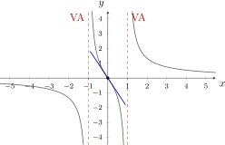
5 Irrationale functies
Oefening 4
Onderzoek het verloop van \(f(x)=\sqrt [3]{3x^2-x^3}\).
-
1. Domein: \(\dom f=\R \)
-
2. Continuı̈teit: \(f\) is continu in \(\R \)
-
3. Symmetrie: geen
-
4. Snijpunten met de assen: met de \(x\)-as \((0,0)\) en \((3,0)\), met de \(y\)-as \((0,0)\)
-
5. Tekenverloop
\(f(x)=\sqrt [3]{x^2\,(3-x)}=\sqrt [3]{x^2}\cdot \sqrt [3]{3-x}\), met nulwaarden \(x=0\) en \(x=3\).
\[ \begin {array}{c|ccccc} x & & 0 & & 3 & \\ \hline \sqrt [3]{x^2} & + & 0 & + & + & + \\ \sqrt [3]{3-x} & + & + & + & 0 & - \\ \hline f(x) & + & 0 & + & 0 & - \end {array} \]
-
6. Asymptoten en ligging
geen VA en geen HA; SA \(y=-x+1\) voor \(x\to \pm \infty \)
\(\seteqnumber{0}{}{0}\)\begin{align*} \text {VA:}\quad & \text {geen} \\ \text {HA:}\quad & \lim _{x\to +\infty }\sqrt [3]{3x^2-x^3} =\lim _{x\to +\infty }x\cdot \sqrt [3]{\frac {3}{x}-1}=-\infty \text { en } \lim _{x\to -\infty }\sqrt [3]{3x^2-x^3}=+\infty \Rightarrow \text {geen HA} \end{align*}
\(\seteqnumber{0}{}{0}\)\begin{align*} \text {SA:}\quad m &= \lim _{x\to \pm \infty }\frac {\sqrt [3]{3x^2-x^3}}{x} = \lim _{x\to \pm \infty }\frac {x\cdot \sqrt [3]{\frac {3}{x}-1}}{x} = -1\in \R _0 \\ q &= \lim _{x\to \pm \infty }\bigl (\sqrt [3]{3x^2-x^3}+x\bigr ) \quad \vov {-\infty +\infty } \\ &= \lim _{x\to \pm \infty }\bigl (\sqrt [3]{3x^2-x^3}+x\bigr )\cdot \frac {\sqrt [3]{(3x^2-x^3)^2}-x\sqrt [3]{3x^2-x^3}+x^2} {\sqrt [3]{(3x^2-x^3)^2}-x\sqrt [3]{3x^2-x^3}+x^2} \\ &= \lim _{x\to \pm \infty }\frac {3x^2-x^3+x^3} {x^2\Bigl (\sqrt [3]{\bigl (\frac {3}{x}-1\bigr )^2} -\sqrt [3]{\frac {3}{x}-1}+1\Bigr )} = \frac {3}{1-(-1)+1}=\frac {3}{3}=1\in \R \\ &\Rightarrow y=-x+1 \text { is SA voor } x\to \pm \infty \end{align*}
In de derde stap gebruiken we \((a+b)(a^2-ab+b^2)=a^3+b^3\) met \(a=\sqrt [3]{3x^2-x^3}\) en \(b=x\).
Ligging ten opzichte van de SA: het tekenverloop van \(v(x)=\sqrt [3]{3x^2-x^3}+x-1\). Op het GRM: \(Y_3=Y_1-Y_2\) in de tabel, bij bijvoorbeeld \(x=\pm 10\,000\).
\[ \begin {array}{c|cc} x & -\infty & +\infty \\ \hline v(x) & - & + \end {array} \]
De kromme ligt boven de SA voor \(x\to +\infty \) en onder de SA voor \(x\to -\infty \).
-
7. Eerste afgeleide
minimum \(0\) in \(x=0\) (verticale raaklijn), maximum \(\sqrt [3]{4}\) in \(x=2\)
\(\seteqnumber{0}{}{0}\)\begin{align*} f'(x) &= \frac {1}{3}\cdot \frac {1}{\sqrt [3]{(3x^2-x^3)^2}}\cdot (6x-3x^2) = \frac {x\,(2-x)}{\sqrt [3]{(3x^2-x^3)^2}} = \frac {2-x}{\sqrt [3]{x\,(3-x)^2}} \end{align*} Nulwaarde \(T\): \(x=2\); nulwaarden \(N\): \(x=0\) en \(x=3\).
\[ \begin {array}{r@{\,}c|ccccccc} & x & & 0 & & 2 & & 3 & \\ \hline T & 2-x & + & + & + & 0 & - & - & - \\ N & \sqrt [3]{x\,(3-x)^2} & - & 0 & + & + & + & 0 & + \\ \hline & f'(x) & - & | & + & 0 & - & | & - \\ \hline & f(x) & \searrow & \tvmin {0} & \nearrow & \tvmax {\sqrt [3]{4}} & \searrow & 0 & \searrow \\ & & & \text {VR} & & \text {HR} & & \text {VR} & \end {array} \]
In \(x=0\) en \(x=3\) is de raaklijn verticaal (VR): \(f'\) wordt daar oneindig groot.
-
8. Tweede afgeleide
bol in \(]-\infty ,0[\) en \(]0,3[\), hol in \(]3,+\infty [\); BP \((3,0)\) Met de afgeleide van de noemer \(\Bigl (\sqrt [3]{x\,(3-x)^2}\Bigr )' =\dfrac {(3-x)^2-2x\,(3-x)}{3\sqrt [3]{x^2\,(3-x)^4}} =\dfrac {(3-x)(3-3x)}{3\sqrt [3]{x^2\,(3-x)^4}}\):
\(\seteqnumber{0}{}{0}\)\begin{align*} f''(x) &= \frac {-\sqrt [3]{x\,(3-x)^2}-(2-x)\cdot \dfrac {(3-x)(3-3x)}{3\sqrt [3]{x^2\,(3-x)^4}}} {\sqrt [3]{x^2\,(3-x)^4}} \\ &= \frac {-3x\,(3-x)^2-(2-x)(3-x)(3-3x)} {3\,\Bigl (\sqrt [3]{x\,(3-x)^2}\Bigr )^4} \\ &= \frac {-3\,(3-x)\bigl (x\,(3-x)+(2-x)(1-x)\bigr )} {3\,\Bigl (\sqrt [3]{x\,(3-x)^2}\Bigr )^4} = \frac {-(3-x)\,(3x-x^2+2-3x+x^2)} {\Bigl (\sqrt [3]{x\,(3-x)^2}\Bigr )^4} \\ &= \frac {-2\,(3-x)}{\sqrt [3]{x^4}\cdot (3-x)^2\cdot \sqrt [3]{(3-x)^2}} = \frac {-2}{\sqrt [3]{x^4}\cdot \sqrt [3]{(3-x)^2}\cdot (3-x)} \end{align*} Nulwaarden \(T\): geen; nulwaarden \(N\): \(x=0\) en \(x=3\).
\[ \begin {array}{r@{\,}c|ccccc} & x & & 0 & & 3 & \\ \hline T & -2 & - & - & - & - & - \\ N & \sqrt [3]{x^4}\,\sqrt [3]{(3-x)^2}\,(3-x) & + & 0 & + & 0 & - \\ \hline & f''(x) & - & | & - & | & + \\ \hline & f(x) & \cap & 0 & \cap & \text {BP} & \cup \end {array} \]
\(\text {BP}=(3,0)\): \(f\) is continu, de raaklijn (evenwijdig met de \(y\)-as) bestaat en \(f''\) verandert van teken. In \(0\) verandert \(f''\) niet van teken: geen buigpunt.
-
9. Enkele punten en overzichtstabel
\[ \begin {array}{c|cccccccc} x & -2 & -1 & 0 & 1 & 2 & 2.5 & 3 & 4 \\ \hline f(x) & 2.71 & 1.59 & 0 & 1.26 & 1.59 & 1.46 & 0 & -2.52 \end {array} \]
\[ \begin {array}{c|ccccccc} x & & 0 & & 2 & & 3 & \\ \hline f'(x) & - & | & + & 0 & - & | & - \\ \hline f''(x) & - & | & - & - & - & | & + \\ \hline f(x) & \searrow & \tvmin {0} & \nearrow & \tvmax {\sqrt [3]{4}} & \searrow & \tvbp {0} & \searrow \\ & \cap & \text {VR} & \cap & \text {HR} & \cap & \text {VR} & \cup \end {array} \qquad \text {SA: } y=-x+1 \]
-
10. Grafiek
Met de gegevens uit 1 tot 9 tekenen we de grafiek hieronder.
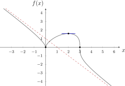
6 VBTL Oefeningen
VBTL Analyse 3: p 40 nr 5 en 6 (a tot f en i tot l); p 41 nr 7; p 45 nr 28 tot 30; p 49 nr 38